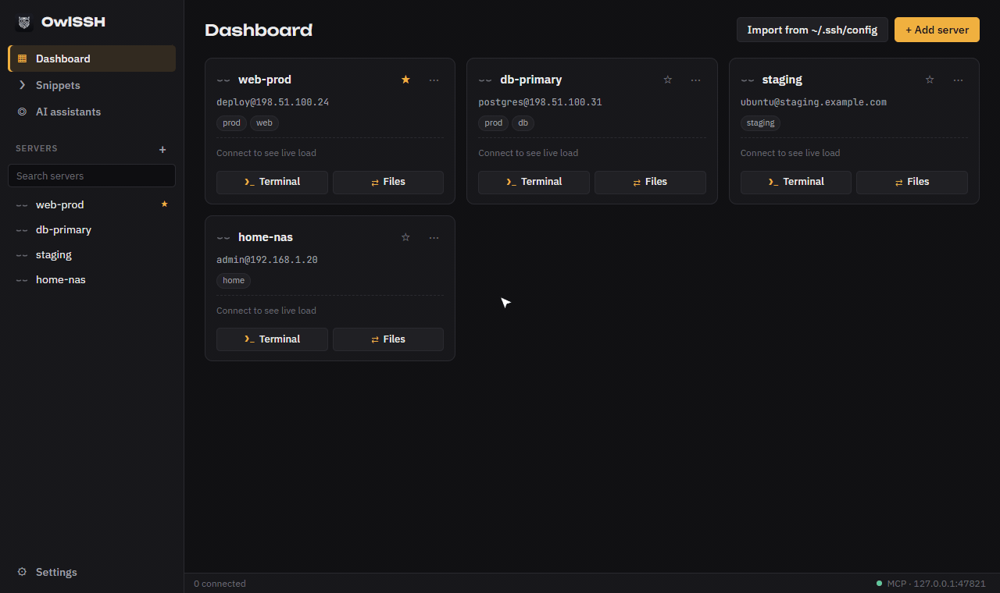
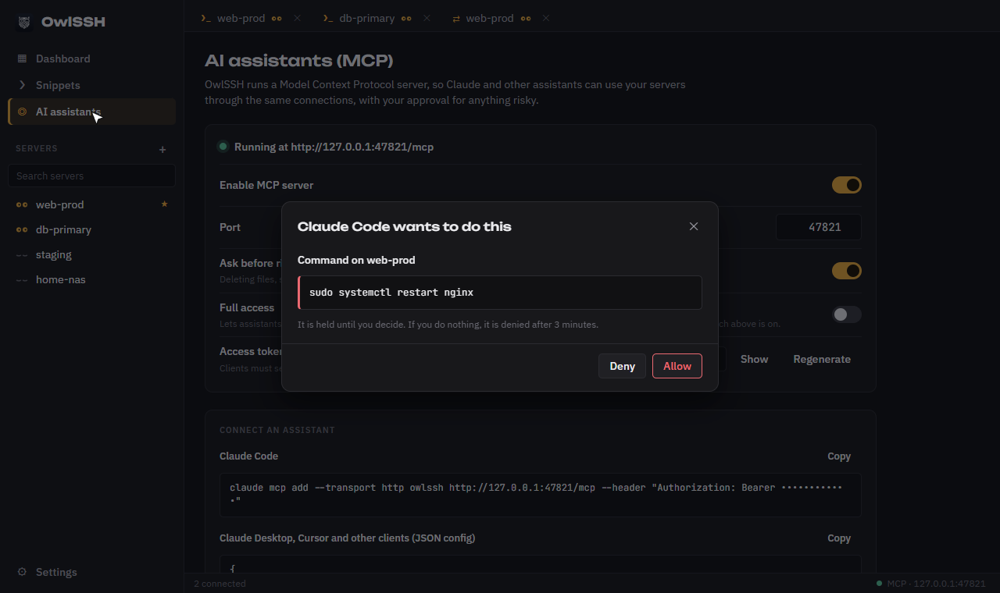
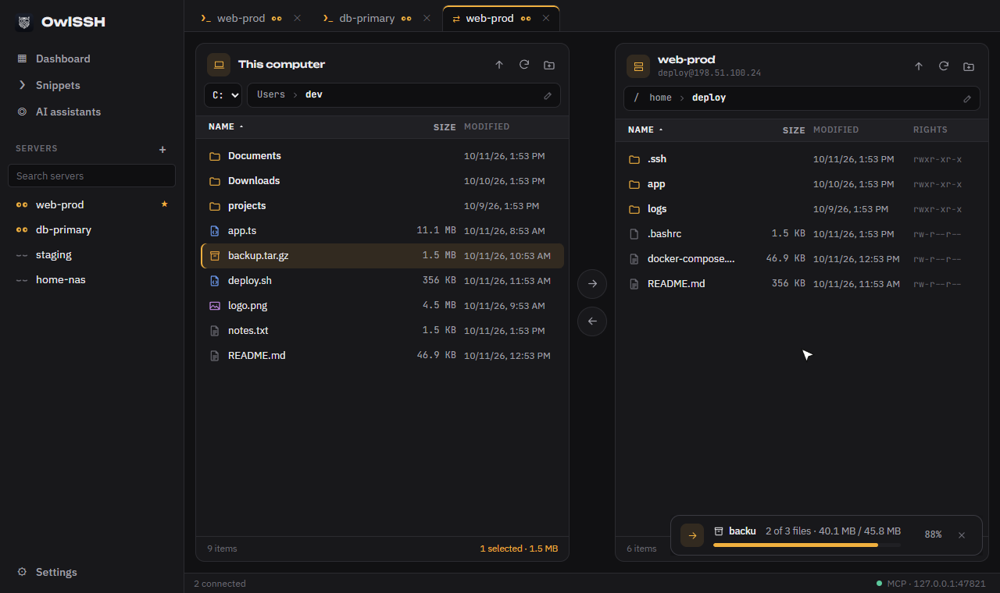
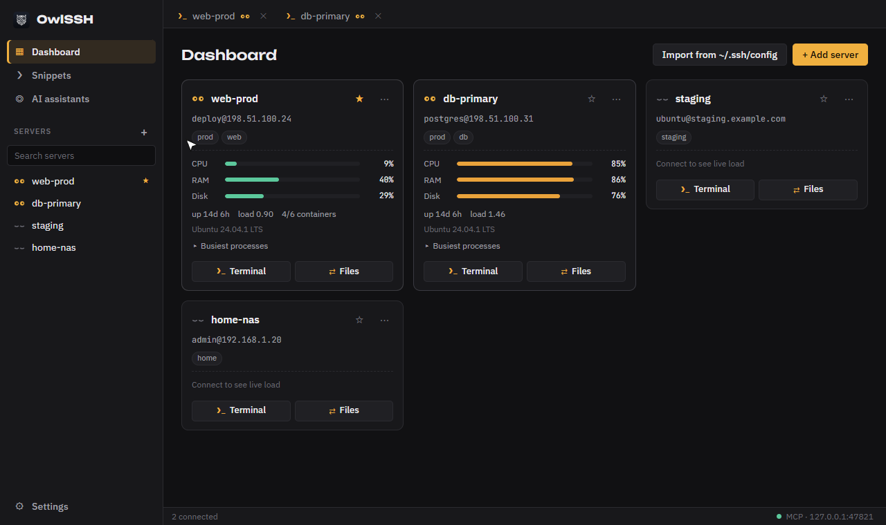

Десктопный SSH-клиент для Windows, macOS и Linux. Быстрый терминал, живая панель серверов, файловый менеджер и встроенный MCP-сервер: ИИ-ассистент работает на тех же серверах, что и вы, а опасные действия ждут вашего подтверждения.

Вкладки с настоящим PTY, xterm.js с WebGL, TCP_NODELAY, вывод потоком байтов. Горячие клавиши копирования и вставки настраиваются и работают на любой раскладке.
Карточка на сервер: CPU, RAM, диск, нагрузка, процессы и Docker-контейнеры. Ничего не нужно ставить на сервер, хватает одного запроса по уже открытому соединению.
Две панели: компьютер и сервер. Перетаскивание, в том числе из проводника, рекурсивная передача папок с прогрессом и отменой.
Пароли в хранилище ОС, проверка отпечатков хостов, ключи и SSH-агент, jump-хосты, режим стримера, скрывающий реальные адреса.
Команды с плейсхолдерами на один или несколько серверов сразу, палитра Ctrl+K для серверов, вкладок и экранов.
Интерфейс на двух языках, тёмная, светлая или системная тема.
OwlSSH запускает MCP-сервер на 127.0.0.1. Claude Code, Cursor и другие клиенты выполняют команды и передают файлы через соединения приложения, а не через собственные ключи.


